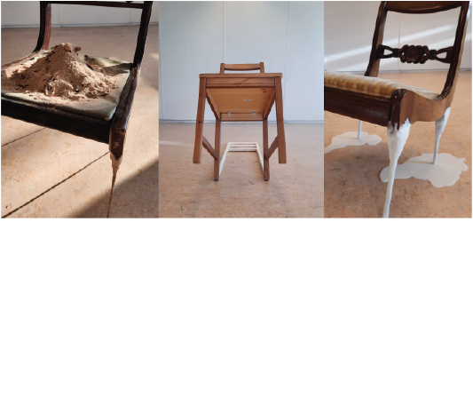

10:00-18:00
Museumplein 69
1-1.5 hours
The chair has been a staple in every culture. Famous Artist Bauke van Mourik has made a museum celebrating the existence of chairs by creating over 50 pieces related to all sorts of themes. The special exhibition ‘chairstair’ launches 4/20.
View on MapYou liked these photo's:
